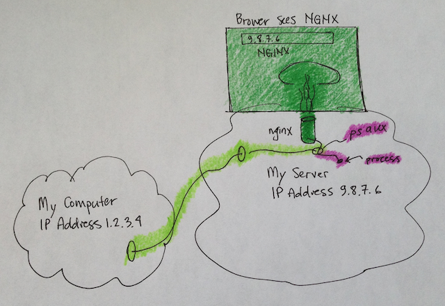
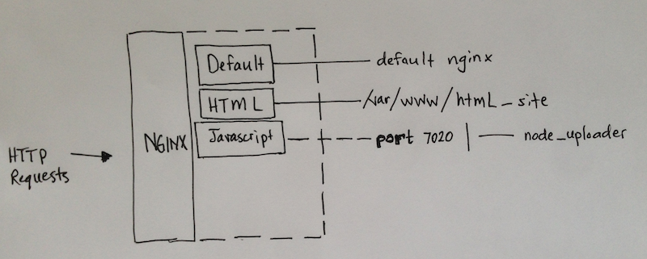
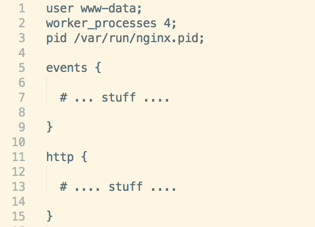
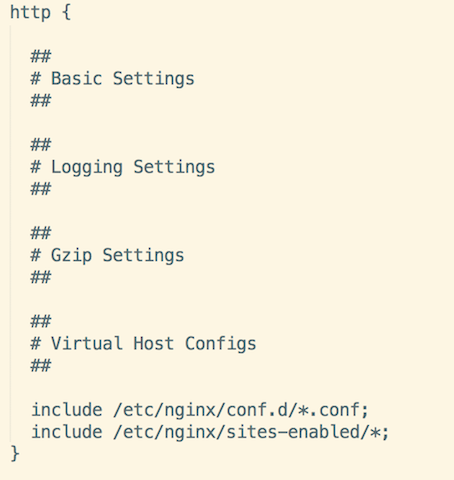
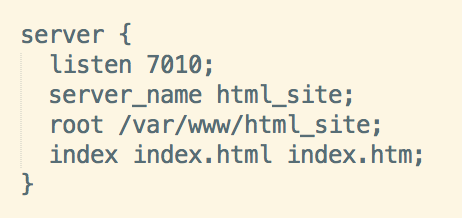
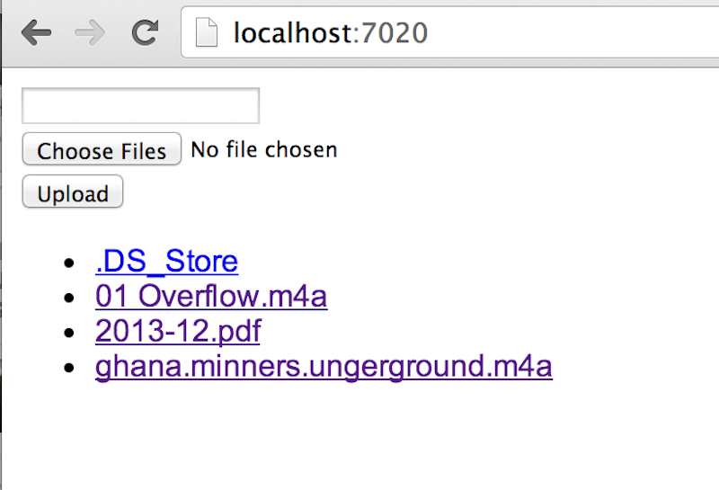
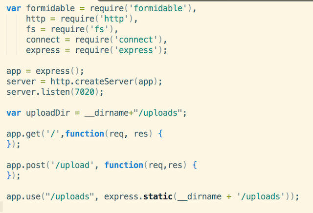
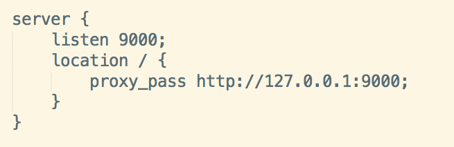

4 sessions
Session 1 - What are servers? What is the internet?
Session 2 - How to interact with servers
Session 3 - How to setup and use NGINX
Session 4 - How to use Vagrant
Real Question
What am I going to understand?
We want you to feel comfortable:
- Talking about servers
- Using SSH to interact with servers
- Setting up real HTML and Javascript websites
- Dreaming about servers
Session 2 Review

Session 2 Review
Session 3 End Goal
Configurations
Software packages are written with specific intents, but allow you to configure them.
For example:
- Desktop Background
- Username and Password
Most unix packages will have 1 of many configraution files.
There isn't a default location for the config file - read the docs.
NGINX Configs
Main file
/etc/nginx/nginx.confOther config files exist within
/etc/nginxnginx.conf
Configs = Directives & Blocks
nginx.conf
directive: user
Group Google! "nginx user"
http://wiki.nginx.org/CoreModule#user
NGINX user and group used to run the backgroup process
On the server:
- Check user/group running the nginx process
- Check the user in the /etc/nginx/nginx.conf file
nginx.conf
directive: worker_processes
Group Google! "nginx worker_processes"
http://wiki.nginx.org/CoreModule#worker_processes
A worker process is a single-threaded process.
What the heck?
Put this on the back burner:
max_clients = worker_processes * worker_connectionsnginx.conf
directive: pid
"pid" stands for "Process ID"
Enables you to uniquely talk with Unix processes. EG,
sudo service stopGroup Google! "nginx pid"
nginx.conf
block: events
directive: worker_connections
Last Google Group! "nginx worker_connections"
nginx.conf
block: http
overview
nginx.conf
block: http
Basic Settings
sendfile on;
tcp_nopush on;
tcp_nodelay on;
keepalive_timeout 65;
types_hash_max_size 2048;
# server_tokens off;
# server_names_hash_bucket_size 64;
# server_name_in_redirect off;
include /etc/nginx/mime.types;
default_type application/octet-stream;
Worth noting,
include ...pulls file contents into configuration
nginx.conf
block: http
Logging Settings
nginx.conf
block: http
Gzip Settings
nginx.conf
block: http
Virtual Host Configs
Again, pulling outside files into configuration
include /etc/nginx/conf.d/*.conf;
include /etc/nginx/sites-enabled/*;Setup HTML Site
Follow along ...
As the deploy user, ssh into machine
ssh deploy@9.8.7.6Create www folder
Create a "www" folder for sites to live in.
cd /var
mkdir www
cd www
You should get the same output
pwd # OUTPUT /var/wwwUse git to pull in HTML
We'll pull a pre-made website from GitHub
sudo apt-get update
sudo apt-get install git
git clone git@github.com:westonplatter/example_html_site.git html_siteCheck that the files were "cloned"
cd html_site
pwd # => OUTPUT /var/www/html_site
ls
You should see an index.html file and folders
NGINX "server" blocks for Site
Need somthing to map between NGXIN and folder
nginx.conf
block: server
listen - listen for HTTP requests on this port
sever_name - helps NGINX match HTTP request to server blocks
root - file system path to website
index - default file to serve
Create html_site nginx configuration
cd /etc/nginx/sites-enabledCreate file using a shell editor
nano html_siteserver {
listen 7010;
server_name html_site;
root /var/www/html_site;
index index.html index.htm;
}Restart nginx to pickup the "html_site" changes
Go to site
9.8.7.6:7010
Short recap
NGINX was reading the HTML files
What if we have non HTML sites?
Welcome to Nodejs
Nodejs is full application framework written in pure javascript
It's different because it intakes the HTTP request and "HTTP Response" differently for each request
Demo of the Nodejs app

The Simple Basics of Nodejs
So how do we get that work?
We need NGINX to send HTTP Requests to the app
Follow along for the ride ...
Install nodejs on the server
sudo apt-get update
sudo apt-get install -y python-software-properties python g++ make
sudo add-apt-repository ppa:chris-lea/node.js
sudo apt-get update
sudo apt-get install nodejsThis should work
node -vGet the Node app from Github
Use git again
cd /var/www
git clone git@github.com:westonplatter/gdi-boulder-servers-intro-node-uploader.git node_site
Install dependencies
npm installInstall this too
npm install -g foreverTest it out
Start up the node app
node serverGo to your IP address on port 9000
9.8.7.6:9000Now we need the NGINX connect
Create a Server block with Reverse Proxy
Create the node config
Back to the NGINX configs
cd /etc/nginx/sites-enabled
nano node_siteRestart nginx to pick up configs
sudo service nginx restartHow do we keep the app running?
We need a process manager, AKA, daemon
sudo npm install -g forever
cd /var/www/node_site
forever start server.js
See that it's running (similar to "ps aux | grep nginx"
forever list